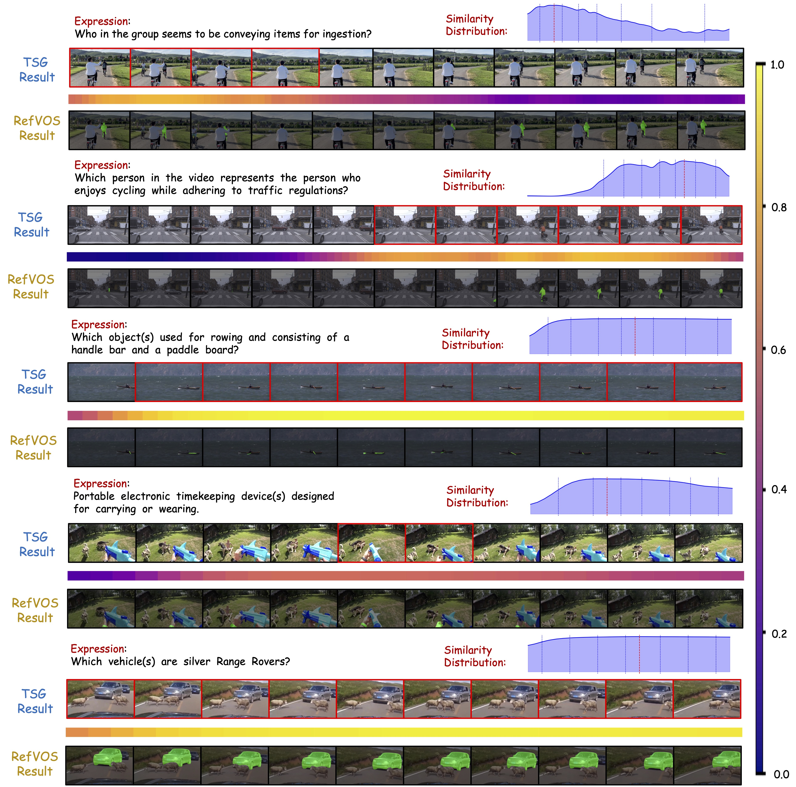

Referring Video Object Segmentation (RefVOS) aims to segment target objects in videos guided by natural language descriptions, a task demanding both temporal reasoning and fine-grained visual comprehension. Existing LLM-based approaches rely on sampling strategies that either use handcrafted heuristics, which often overlook essential temporal cues, or external keyframe models, which increase system complexity. To address this, we propose a unified framework that jointly optimizes Temporal Sentence Grounding (TSG) and RefVOS, naturally incorporating key moment grounding capability.
During training, we introduce a novel TSG paradigm employing a dedicated [FIND] token for key moment identification through temporal token similarity matching, avoiding external timestamp encodings. For inference, we design a Moment-Centric Sampling (MCS) strategy that densely samples informative moments while sparsely sampling non-essential frames, preserving motion details and global context. To further enhance tracking stability, we develop Bidirectional Anchor-updated Propagation (BAP), leveraging the most relevant moment as a start point for mask initialization and dynamically updating at sampled points to mitigate accumulated errors.
Referring Video Object Segmentation
Reasoning Video Object Segmentation
Please cite our paper if you find this project helpful: